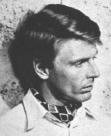

Edward Fox
(1937 - )He was so believable in every part he played that it was difficult to distinguish the actor from the character. Two films stand out in his distinguished career, "Day of the Jackal" and "A Bridge Too Far" in which he stole each scene from veteran stars. He was a tall, lean, fair-haired actor with a stiff-upper-lip, sleepy eyes and an aristocratic air about him. Military officers, upper-class and well bred types were the roles in which he was most often cast. He was born on April 13, 1937 in London, England the son of a theatrical agent and a playwright's daughter. Although his parents, Robin and Angela, didn't expect him to follow a theatrical vocation, Edward was determined to become an actor. His younger brother James set out at about the same time to seek an acting career. While James had pretty much immediate success, Edward struggled for a time in community repertoire theatre groups. Edward trained at the Royal Academy of Dramatic Art, was a product of Harrow and also served a stint in the Coldstream Guards which prepped him for the type of roles he played. Oddly, when James found religion and retired briefly from acting, Edward's career started to take-off. In the late 1950s he had married Tracy Reed, step-daughter of director Sir Carol Reed and they had a daughter, Lucy. The marriage ended in a few years and he had a nervous breakdown. He later met actress Joanna David and moved in with her. They have two children, Emilia and Freddy. Fox made his movie debut in a small role in "This Sporting Life" (1963) with Richard Harris, as Restaurant Barman. His other film credits include: "The Jokers" (1966) as Lt. Sprague; "I'll Never Forget What's 'is Name" (1967) as Walter; "The Naked Runner" (1967) as Ritchie Jackson; "The Long Duel" (1967) as Hardwicke; "Battle of Britain" (1969) as Pilot Officer Archie; "Oh! What a Lovely War" (1969) as Aide; "Skullduggery" (1970) as Bruce Spofford; "The Go-Between" (1971) as Hugh Trimingham; the film that set his career on fire "The Day of the Jackal" (1973) as The Jackal, a terrific star-making role; "A Doll's House" (1973) as Nils Krogstad; "Galileo" (1975) as Cardinal Inquisitor; another fabulous role in "A Bridge Too Far" (1977) as Lt. Gen. Brian Horrocks; "Soldier of Orange" (1977) with Rutger Hauer, as Col. Rafelli; "The Duellists" (1977) as Colonel; "The Big Sleep" (1978) with Robert Mitchum, as Joe Brody; "Force 10 From Navarone" (1978) as Miller; "The Cat and the Canary" (1979) as Hendricks; "The Mirror Crack'd" (1980) as Inspector Craddock; "Gandhi" (1982) as Gen. Dyer; "Never Say Never Again" (1983) with Sean Connery, as 'M'; "The Shooting Party" (1984) as Lord Gilbert Hartlip; "The Bounty" (1984) with Mel Gibson, as Capt. Greenham; "Wild Geese II" (1985) as Alex Faulkner; "Return from the River Kwai" (1988) as Maj. Benford; "Sherwood's Travels" (1994) as Donen; "A Feast at Midnight" (1994) as Father; "A Month by the Lake" (1995) as Maj. Wilshaw; "After Murder Park" (1997) as D.I. Iain Masters; "Prince Valiant" (1997) as King Arthur and "Lost in Space" (1998) as Business Man. On TV he starred in the series "Hard Times" (1977) as Harthouse. and in the magnificent mini-series: "Edward and Mrs. Simpson" (1980) as King Edward VIII, a terrific performance; "Shaka Zulu" (1984) as Lt. Francis Farewell; "The Strauss Dynasty" (1991) as Metternich; "A Dance to the Music of Time" (1997) as Uncle Giles and "Modern World: The Ten Great Writers" (1988) as Reader in Eliot segment. He also appeared in TV movies including: "The Black Knight"; "Anastasia: The Mystery of Anna" (1986); "Quartermaine's Terms" (1987) and "Gulliver's Travels" (1996). He also guest starred on "The Avengers" in 1961.
From Great Character Actors, Page 6.
|